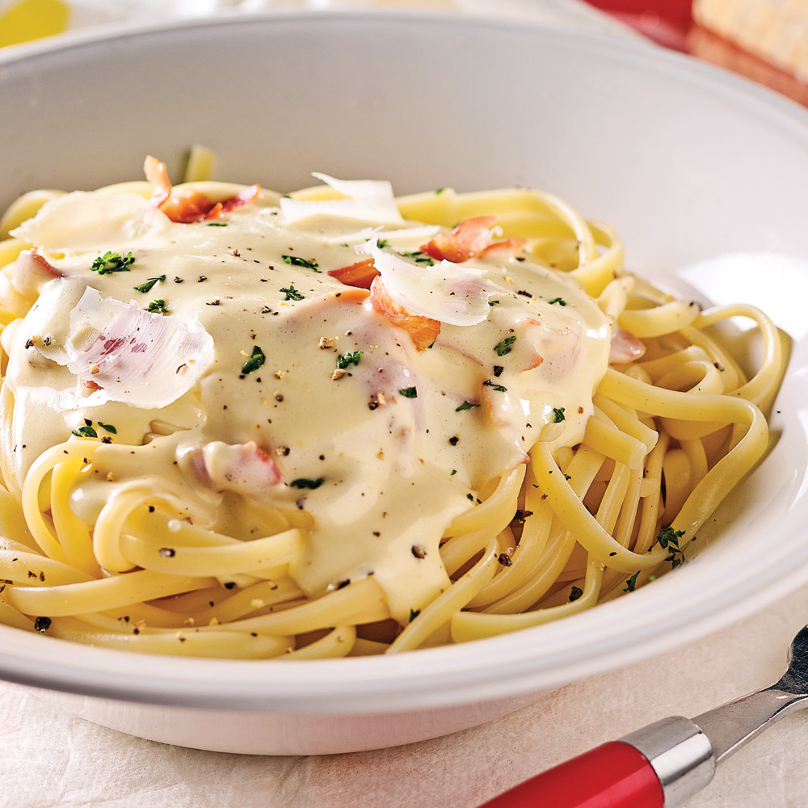

Carbonara

Description
This is a step-by-step guide to making a delicious, mouthwatering carbonara sauce.
You will not find a better recipe!
Ingredients
- 1/2 Cup Butter
- 1 & 1/2 Cups Heavy Whipping Cream
- 1 garlic
- 1 tbsp salt
- 1 Teaspoon Italian Seasoning
- 2 Cups Freshly Grated Parmesan Cheese
- 2 tsp olive oil
- 200g sliced pancetta, roughly chopped
- 2 eggs
How to Make Carbonara Sauce Step-By-Step
Here's a very brief overview of what you can expect when you make homemade carbonara sauce:
- Add the butter and cream to a large skillet.
- Simmer over low heat for 2 minutes.
- Whisk in the eggs, garlic, Italian seasoning, salt for one minute.
- Whisk in the parmesan cheese until melted.